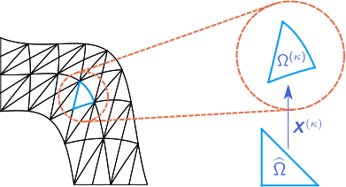

Module SpatialDiscretizations
The SpatialDiscretizations module defines the discretization on the reference element and provides the geometric data relating to the mesh and the mapping from reference to physical space.
Overview
Discretizations in StableSpectralElements.jl are constructed by first building a local approximation on a canonical reference element, denoted generically as $\hat{\Omega} \subset \mathbb{R}^d$, and using a bijective transformation $\bm{X}^{(\kappa)} : \hat{\Omega} \rightarrow \Omega^{(\kappa)}$ to construct the approximation on each physical element $\Omega^{(\kappa)} \subset \Omega$ of the mesh $\{ \Omega^{(\kappa)}\}_{\kappa \in \{1:N_e\}}$ in terms of the associated operators on the reference element. An example of such a mapping is shown below, where we also depict the collapsed coordinate transformation $\bm{\chi} : [-1,1]^d \to \hat{\Omega}$ which may be used to construct operators with a tensor-product structure on the reference simplex.

In order to define the different geometric reference elements, the subtypes Line, Quad, Hex, Tri, and Tet of AbstractElemShape from StartUpDG.jl are used and re-exported by StableSpectralElements.jl, representing the following reference domains:
\[\begin{aligned} \hat{\Omega}_{\mathrm{line}} &= [-1,1],\\ \hat{\Omega}_{\mathrm{quad}} &= [-1,1]^2,\\ \hat{\Omega}_{\mathrm{hex}} & = [-1,1]^3, \\ \hat{\Omega}_{\mathrm{tri}} &= \big\{ \bm{\xi} \in [-1,1]^2 : \xi_1 + \xi_2 \leq 0 \big\},\\ \hat{\Omega}_{\mathrm{tet}} &= \big\{ \bm{\xi} \in [-1,1]^3 : \xi_1 + \xi_2 + \xi_3 \leq -1 \big\}. \end{aligned}\]
These element types are used in the constructor for StableSpectralElements.jl's ReferenceApproximation type, along with a subtype of AbstractApproximationType (NodalTensor, ModalTensor, NodalMulti, ModalMulti, NodalMultiDiagE, or ModalMultiDiagE) specifying the nature of the local approximation.
All the information used to define the spatial discretization on the physical domain $\Omega$ is contained within a SpatialDiscretization structure, which is constructed using a ReferenceApproximation and a MeshData from StartUpDG.jl. When the constructor for a SpatialDiscretization is called, the grid metrics are computed and stored in a field of type GeometricFactors.
Reference
StableSpectralElements.SpatialDiscretizations.construct_pmatrix — Method
construct_pmatrix(np::Int, nd::Int, l::Int, p::Int;
operator_type::String = "lgl", n1d::Int = -1)Construct the local-to-global projection matrix for subdomain l of a split triangle.
StableSpectralElements.SpatialDiscretizations.construct_split_facet_operator_tet — Method
construct_split_facet_operator_tet(p::Int; operator_type::String = "lgl",
n1d::Int = -1, T = Float64)Construct patched TSS-SBP facet operators on the reference tetrahedron.
Returns (B, N, R, E), where B contains facet quadrature weights, N contains scaled normals, R extrapolates volume values to facets, and E contains the boundary integration matrices.
StableSpectralElements.SpatialDiscretizations.construct_split_facet_operator_tri — Method
construct_split_facet_operator_tri(p::Int; operator_type::String = "lgl",
n1d::Int = -1, T = Float64)Construct patched TSS-SBP facet operators on the reference triangle.
Returns (B, N, R, E), where B contains facet quadrature weights, N contains scaled normals, R extrapolates volume values to facets, and E contains the boundary integration matrices.
StableSpectralElements.SpatialDiscretizations.construct_split_operator_tet — Method
construct_split_operator_tet(p::Int; operator_type::String = "lgl",
n1d::Int = -1, T = Float64)Construct patched TSS-SBP volume operators on the reference tetrahedron.
Returns (H, Q, D, E), where H is the norm matrix and Q, D, and E are vectors of coordinate-direction matrices.
StableSpectralElements.SpatialDiscretizations.construct_split_operator_tri — Method
construct_split_operator_tri(p::Int; operator_type::String = "lgl",
n1d::Int = -1, T = Float64)Construct patched TSS-SBP volume operators on the reference triangle.
Returns (H, Q, D, E, S), where H is the norm matrix and Q, D, E, and S are vectors of coordinate-direction matrices.
StableSpectralElements.SpatialDiscretizations.construct_zmatrix — Method
construct_zmatrix(glob_idx::Array{T}, i::Int, j::Int, nglob::Int) where {T}Construct the sparse scatter matrix used to patch split subelements in continuous Galerkin form.
References
- J. E. Hicken, D. C. Del Rey Fernandez, D. W. Zingg (2016) Multidimensional summation-by-parts operators: General theory and application to simplex elements. DOI: 10.1137/15M1038360
StableSpectralElements.SpatialDiscretizations.cube_hex_map — Method
cube_hex_map(xp::Array{T}, hex_vert::Array{T}) where {T}Map a point from the reference cube [-1, 1]^3 to the hexahedron with vertices hex_vert.
Returns the mapped physical coordinate.
StableSpectralElements.SpatialDiscretizations.cube_to_tet_map — Method
cube_to_tet_map(xi::Array{T}) where {T}Map reference-cube points to the four hexahedra generated by splitting the reference tetrahedron.
Returns the coordinates of all mapped split-tetrahedron points.
StableSpectralElements.SpatialDiscretizations.facet_nodes_cube — Method
facet_nodes_cube(n::Int)Return the element node indices associated with each facet of a cube element with n nodes.
StableSpectralElements.SpatialDiscretizations.facet_nodes_square — Method
facet_nodes_square(n::Int)Return the element node indices associated with each facet of a square element with n nodes.
StableSpectralElements.SpatialDiscretizations.get_1d_minimal — Function
get_1d_minimal(p::Int, L::Float64 = 1.0)Construct the boundary optimized one-dimensional diagonal-norm SBP operator of degree p with coefficients optimized for a small number of boundary nodes.
Returns (D, Q, H, x), where D is the differentiation matrix, Q = H * D, H is the norm matrix, and x contains the nodal coordinates on [-1, 1].
References
- K. Mattsson, M. Almquist, E. van der Weide (2018) Boundary optimized diagonal-norm SBP operators. DOI: 10.1016/j.jcp.2018.06.010
StableSpectralElements.SpatialDiscretizations.get_1d_opt — Method
get_1d_opt(p::Int)Construct the one-dimensional diagonal-norm SBP operator of degree p with the optimized coefficients of K. Mattsson, M. Almquist, and M. H. Carpenter (2014).
Returns (D, Q, H, x), where D is the differentiation matrix, Q = H * D, H is the norm matrix, and x contains the nodal coordinates on [-1, 1].
References
- K. Mattsson, M. Almquist, M. H. Carpenter (2014) Optimal diagonal-norm SBP operators. DOI: 10.1016/j.jcp.2013.12.041
StableSpectralElements.SpatialDiscretizations.get_1d_optimal — Function
get_1d_optimal(p::Int, L::Float64 = 1.0)Construct the boundary optimized one-dimensional diagonal-norm SBP operator of degree p with coefficients optimized for small solution error.
Returns (D, Q, H, x), where D is the differentiation matrix, Q = H * D, H is the norm matrix, and x contains the nodal coordinates on [-1, 1].
References
- K. Mattsson, M. Almquist, E. van der Weide (2018) Boundary optimized diagonal-norm SBP operators. DOI: 10.1016/j.jcp.2018.06.010
StableSpectralElements.SpatialDiscretizations.get_hex_vert — Method
get_hex_vert(; T = Float64)Return the vertices of the four hexahedra obtained by splitting the reference tetrahedron with vertices [-1 -1 -1; 1 -1 -1; -1 1 -1; -1 -1 1].
StableSpectralElements.SpatialDiscretizations.get_quad_vert — Method
get_quad_vert()Return the vertices of the three quadrilaterals obtained by splitting the reference triangle with vertices [-1 -1; 1 -1; -1 1].
StableSpectralElements.SpatialDiscretizations.global_node_index_tet — Method
global_node_index_tet(p::Int; operator_type::String = "lgl",
n1d::Int = -1, T = Float64)Return the global node coordinates and local-to-global node maps for the split tetrahedron.
StableSpectralElements.SpatialDiscretizations.global_node_index_tet_facet — Method
global_node_index_tet_facet(p::Int; operator_type::String = "lgl",
n1d::Int = -1, T = Float64)Return facet node coordinates and local-to-global facet maps for the split tetrahedron.
StableSpectralElements.SpatialDiscretizations.global_node_index_tri — Method
global_node_index_tri(p::Int; operator_type::String = "lgl",
n1d::Int = -1, T = Float64)Return the global node coordinates and local-to-global node maps for the split triangle.
StableSpectralElements.SpatialDiscretizations.global_node_index_tri_facet — Method
global_node_index_tri_facet(p::Int; operator_type::String = "lgl",
n1d::Int = -1, T = Float64)Return facet node coordinates and local-to-global facet maps for the split triangle.
StableSpectralElements.SpatialDiscretizations.map_tensor_operators_to_tet — Method
map_tensor_operators_to_tet(p::Int; operator_type::String = "lgl",
n1d::Int = -1, T = Float64)Map tensor-product SBP operators to the hexahedral subelements of the split reference tetrahedron.
Returns (Hs, Qs, Ds, Es, Ns, dxs), the local norm, SBP, derivative, boundary, normal, and metric data for each subelement.
StableSpectralElements.SpatialDiscretizations.map_tensor_operators_to_tri — Method
map_tensor_operators_to_tri(p::Int; operator_type::String = "lgl",
n1d::Int = -1, T = Float64)Map tensor-product SBP operators to the quadrilateral subelements of the split reference triangle.
Returns (Hs, Qs, Ds, Es, Ns, Ss, dxs), the local norm, SBP, derivative, boundary, normal, skew-symmetric, and metric data for each subelement.
StableSpectralElements.SpatialDiscretizations.metric_tet! — Method
metric_tet!(xp::Array{T}, hex_vert::Array{T}, dxi::SubArray{T},
dx::SubArray{T}, Jac::SubArray{T}) where {T}Compute metric terms for a point mapped from the reference cube to a hexahedron in the split tetrahedron.
The arrays dxi, dx, and Jac are overwritten in place with the forward metrics, inverse metrics, and metric Jacobian.
StableSpectralElements.SpatialDiscretizations.metric_tri! — Method
metric_tri!(xp::Array{T}, quad_vert::Array{T}, dxi::SubArray{T},
dx::SubArray{T}, Jac::SubArray{T}) where {T}Compute metric terms for a point mapped from the reference square to a quadrilateral in the split triangle.
The arrays dxi, dx, and Jac are overwritten in place with the forward metrics, inverse metrics, and metric Jacobian.
StableSpectralElements.SpatialDiscretizations.normals_cube — Method
normals_cube(nf::Int; T = Float64)Return the outward unit normals at the facet nodes of the reference cube [-1, 1]^3.
StableSpectralElements.SpatialDiscretizations.normals_square — Method
normals_square(nf::Int; T = Float64)Return the outward unit normals at the facet nodes of the reference square [-1, 1]^2.
StableSpectralElements.SpatialDiscretizations.square_quad_map — Method
square_quad_map(xp::Array{T}, quad_vert::Array{T}) where {T}Map a point from the reference square [-1, 1]^2 to the quadrilateral with vertices quad_vert.
Returns the mapped physical coordinate.
StableSpectralElements.SpatialDiscretizations.square_to_tri_map — Method
square_to_tri_map(xi::Array{T}) where {T}Map reference-square points to the three quadrilaterals generated by splitting the reference triangle.
Returns the coordinates of all mapped split-triangle points.
StableSpectralElements.SpatialDiscretizations.tensor_hex_nodes — Method
tensor_hex_nodes(p::Int; operator_type::String = "lgl", n1d::Int = -1)Compute tensor-product nodes on the reference hexahedron from the selected one-dimensional SBP operator.
Returns (xyz, w), where xyz contains the tensor-product node coordinates and w contains the one-dimensional quadrature weights.
StableSpectralElements.SpatialDiscretizations.tensor_operators — Method
tensor_operators(p::Int, dim::Int; operator_type::String = "lgl",
n1d::Int = -1, T = Float64)Construct tensor-product SBP operators in dim dimensions from a one-dimensional SBP operator.
Returns (H, Q, D, E, R), where H is the norm matrix, Q is the SBP flux differencing matrix, D is the differentiation matrix, E is the boundary integration matrix, and R extrapolates volume values to facets.
StableSpectralElements.SpatialDiscretizations.tensor_quad_nodes — Method
tensor_quad_nodes(p::Int; operator_type::String = "lgl", n1d::Int = -1)Compute tensor-product nodes on the reference quadrilateral from the selected one-dimensional SBP operator.
Returns (xy, w), where xy contains the tensor-product node coordinates and w contains the one-dimensional quadrature weights.
StableSpectralElements.SpatialDiscretizations.GeometricFactors — Type
GeometricFactors(J_q::Matrix{Float64},
Λ_q::Array{Float64, 4},
J_f::Matrix{Float64},
nJf::Array{Float64, 3},
nJq::Array{Float64, 4})Nodal values of geometric factors used by the solver to construct discretizations on the physical element. Contains the following fields:
J_q::Matrix{Float64}: Jacobian determinant $J$ of the mapping from reference coordinates $\bm{\xi} \in \hat{\Omega}$ to physical coordinates $\bm{x} \in \Omega^{(\kappa)}$ at volume quadrature nodes; first dimension is node index (sizeN_q), second is element index (sizeN_e)Λ_q::Array{Float64, 4}: Metric terms $J \partial \xi_l / \partial x_m$ at volume quadrature nodes; first index is node index (sizeN_q), next two are $l$ and $m$ (sized), last is element index (sizeN_e)J_f::Matrix{Float64}: Facet area element at facet quadrature nodes; first index is node index (sizeN_f), second is element index (sizeN_e)nJf::Array{Float64, 3}: Scaled surface normal vector at facet quadrature nodes; first index is component of normal vector (sized), second is node index (sizeN_f), third is element index (sizeN_e)nJq::Array{Float64, 4}: Scaled surface normal vector to a given facet computed using the volume metrics (used in flux differencing); first index is component of normal vector (sized), second component is reference facet index, third is volume quadrature node index (sizeN_q), last is element index (sizeN_e)
When using sum-factorization algorithms in collapsed coordinates with a StandardForm solver and a ReferenceOperator strategy, apply_reference_mapping! overwrites Λ_q to contain the metrics associated with the composite mapping from $[-1,1]^d$ to $\Omega^{(\kappa)}$. See (6.2) and (6.3) in the following paper:
- T. Montoya and D. W. Zingg (2024). Efficient tensor-product spectral-element operators with the summation-by-parts property on curved triangles and tetrahedra. SIAM Journal on Scientific Computing 46(4):A2270-A2297.
StableSpectralElements.SpatialDiscretizations.MatrixFreeTPSSLGL — Type
MatrixFreeTPSSLGL(p::Int)Approximation type for a matrix-free nodal formulation of polynomial degree $p$ based on tensor-product split-simplex operators using a one-dimensional LGL SBP operator. Currently supports Tri and Tet element types.
StableSpectralElements.SpatialDiscretizations.ModalMulti — Type
ModalMulti(p::Int)Approximation type for a modal formulation of polynomial degree $p$ based on multidimensional volume and facet quadrature rules (generalized Vandermonde, derivative and interpolation/extrapolation operators are all dense). Currently supports Tri and Tet element types.
StableSpectralElements.SpatialDiscretizations.ModalMultiDiagE — Type
ModalMultiDiagE(p::Int)Approximation type for a modal formulation based on a multidimensional volume quadrature rule of polynomial degree $p$ including nodes collocated with those used for facet integration (generalized Vandermonde and derivative operators are dense, interpolation/ extrapolation operator picks out values at facet quadrature nodes). Currently supports only the Tri element type.
StableSpectralElements.SpatialDiscretizations.ModalTensor — Type
ModalTensor(p::Int)Approximation type for a modal formulation of polynomial degree $p$ based on tensor-product volume and facet quadrature rules (generalized Vandermonde matrix is not necessarily identity, derivative and interpolation/extrapolation operators have tensor-product structure). Currently supports Tri and Tet element types.
StableSpectralElements.SpatialDiscretizations.NodalMulti — Type
NodalMulti(p::Int)Approximation type for a nodal formulation based on multidimensional volume and facet quadrature rules (generalized Vandermonde matrix is identity, derivative and interpolation/extrapolation operators are dense). Currently supports Tri and Tet element types.
StableSpectralElements.SpatialDiscretizations.NodalMultiDiagE — Type
NodalMultiDiagE(p::Int)Approximation type for a nodal formulation of polynomial degree $p$ based on a multidimensional volume quadrature rule including nodes collocated with those used for facet integration (generalized Vandermonde matrix is identity, derivative operator is dense, interpolation/extrapolation operator picks out values at facet quadrature nodes). Currently supports only the Tri element type.
StableSpectralElements.SpatialDiscretizations.NodalTPSS — Type
NodalTPSS(p::Int)Approximation type for a nodal formulation of polynomial degree $p$ based on tensor-product split-simplex operators using a one-dimensional classical finite-difference SBP operator. Currently supports Tri and Tet element types.
StableSpectralElements.SpatialDiscretizations.NodalTPSSLGL — Type
NodalTPSSLGL(p::Int)Approximation type for a nodal formulation of polynomial degree $p$ based on tensor-product split-simplex operators using a one-dimensional LGL SBP operator. Currently supports Tri and Tet element types.
StableSpectralElements.SpatialDiscretizations.NodalTPSSMinimal — Type
NodalTPSSMinimal(p::Int)Approximation type for a nodal formulation of polynomial degree $p$ based on tensor-product split-simplex operators using a minimal one-dimensional SBP operator. Currently supports Tri and Tet element types.
StableSpectralElements.SpatialDiscretizations.NodalTPSSOptimal — Type
NodalTPSSOptimal(p::Int)Approximation type for a nodal formulation of polynomial degree $p$ based on tensor-product split-simplex operators using an optimized one-dimensional SBP operator. Currently supports Tri and Tet element types.
StableSpectralElements.SpatialDiscretizations.NodalTensor — Type
NodalTensor(p::Int)Approximation type for a nodal formulation of polynomial degree $p$ based on tensor-product volume and facet quadrature rules (generalized Vandermonde matrix is identity, derivative and interpolation/extrapolation operators have tensor-product structure). Currently supports Line, Tri, Tet, Quad, and Hex element types.
StableSpectralElements.SpatialDiscretizations.ReferenceApproximation — Type
ReferenceApproximation(approx_type::AbstractReferenceMapping,
element_type::StartUpDG.AbstractElemShape, kwargs...)Data structure defining the discretization on the reference element, containing the following fields, which are defined according to the approximation type, element type, and other parameters passed into the outer constructor:
approx_type::AbstractApproximationType: Type of operators used for the discretization on the reference element (NodalTensor,ModalTensor,NodalMulti,ModalMulti,NodalMultiDiagE,ModalMultiDiagE,NodalTPSS,NodalTPSSLGL,NodalTPSSMinimal,NodalTPSSOptimal, orMatrixFreeTPSSLGL)reference_element::StartUpDG.RefElemData: Data structure containing quadrature node positions and operators used for defining the mapping from reference to physical space; contains the fieldelement_type::StartUpDG.AbstractElemShapewhich determines the shape of the reference element (currently, StableSpectralElements.jl supports the optionsLine,Quad,Hex,Tri, andTet)D::NTuple{d, <:LinearMap}: Tuple of operators of sizeN_qbyN_qapproximating each partial derivative at the volume quadrature nodesV::LinearMap: Generalized Vandermonde matrix of sizeN_qbyN_pmapping solution degrees of freedom to values at volume quadrature nodesVf::LinearMap: Generalized Vandermonde matrix of sizeN_fbyN_pmapping solution degrees of freedom to values at facet quadrature nodesR::LinearMap: Interpolation/extrapolation operator of sizeN_fbyN_qwhich maps nodal data from volume quadrature nodes to facet quadrature nodesW::Diagonal: Volume quadrature weight matrix of sizeN_qbyN_qB::Diagonal: Facet quadrature weight matrix of sizeN_fbyN_fV_plot::LinearMap: Generalized Vandermonde matrix mapping solution degrees of freedom to plotting nodesreference_mapping::AbstractReferenceMapping: Optional collapsed coordinate transformation (eitherReferenceMappingorNoMapping); if such a mapping is used (i.e. notNoMapping), the discrete derivative operators approximate partial derivatives with respect to components of the collapsed coordinate system
Outer constructors are provided to construct the discrete operators by dispatching on each combination of subtypes of AbstractApproximationType and StartUpDG.AbstractElemShape.
StableSpectralElements.SpatialDiscretizations.SpatialDiscretization — Type
SpatialDiscretization(mesh::StartUpDG.MeshData,
reference_approximation::ReferenceApproximation,
metric_type::AbstractMetrics, kwargs...)Composite type containing data for constructing the discretization on the reference element as well as the mesh and associated metric terms.